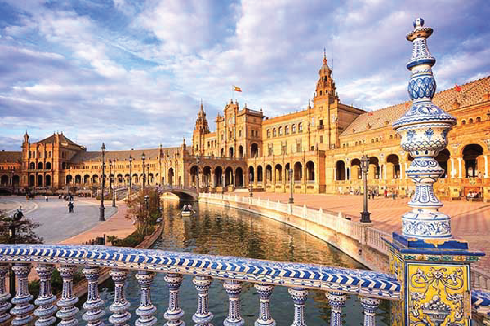
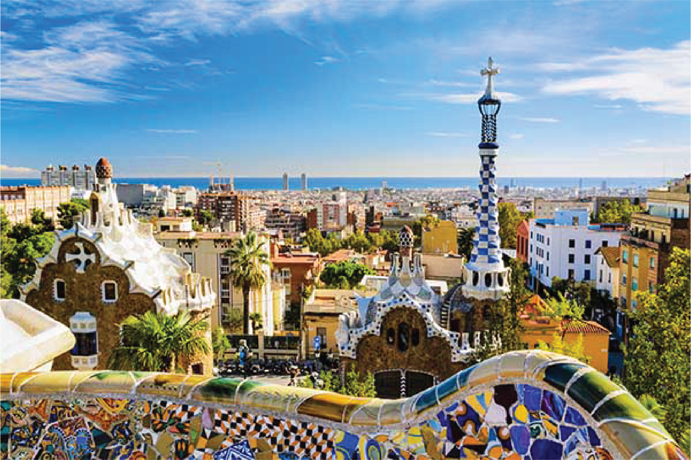
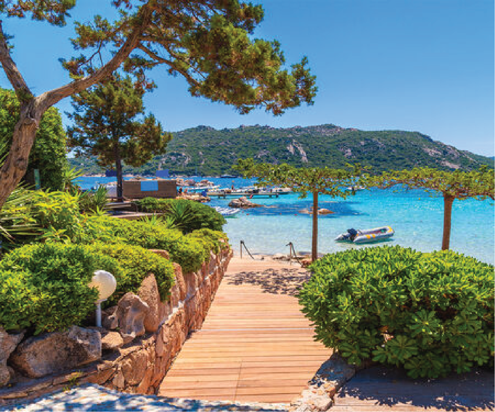
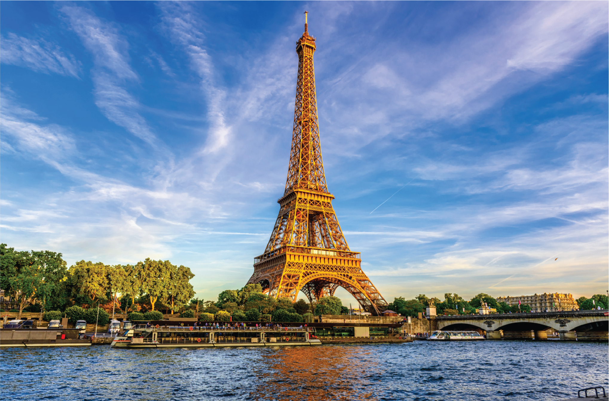
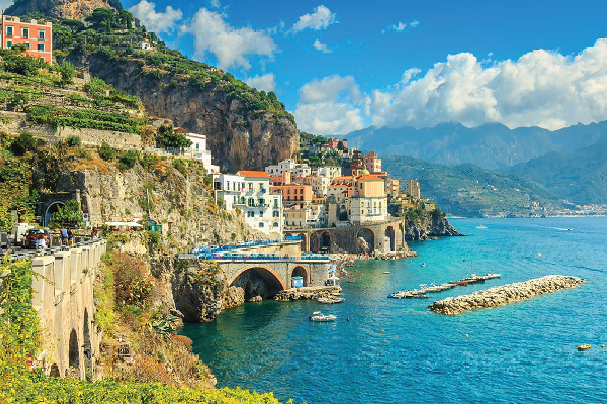
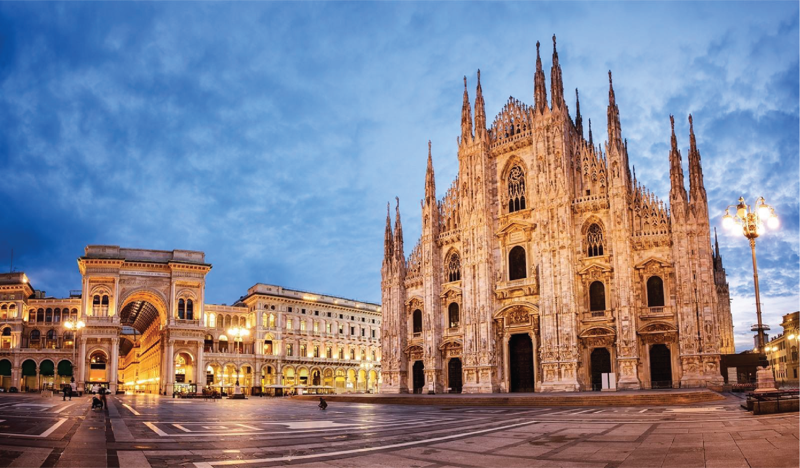
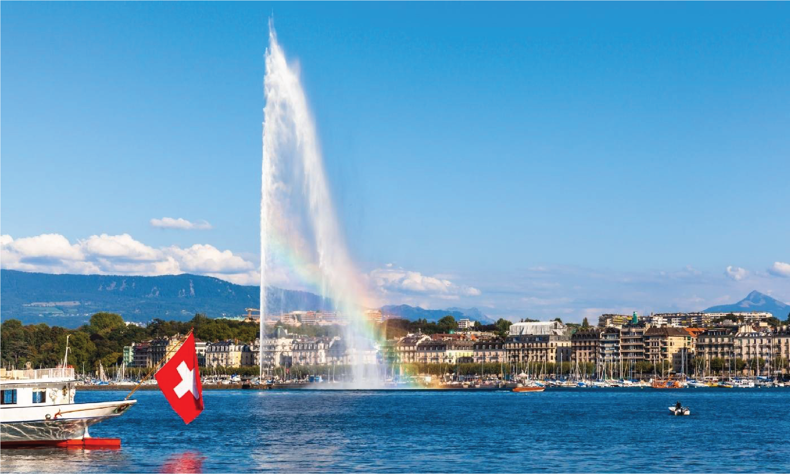

Heb je zelf al een land in gedachten? Klik dan op een van ons!
Spanje
Spanje is echt een toffe vakantiebestemming! Het mediterrane klimaat, prachtige stranden en levendige steden zorgen voor een geweldige sfeer. De rijke cultuur en geschiedenis zijn overal voelbaar, van de indrukwekkende architectuur in steden als Barcelona en Madrid tot de pittoreske dorpjes in het binnenland. Het heerlijke Spaanse eten, met gerechten als tapas, paella en sangria, maakt de ervaring compleet. En niet te vergeten, de warme gastvrijheid van de lokale bevolking maakt het verblijf extra bijzonder. Kortom, Spanje heeft alles voor een fantastische vakantie!

Sevilla
Sevilla is de hoofdstad van de provincie Andalusië. Ik ben hier een keer met mijn familie heen geweest. Mijn vader heeft er vroeger gewoond dus wij gingen met z'n allen op een stedentripje. De flamenco, de oude binnenstad, de aangename temperatuur en de smalle straatjes van de oude wijken zullen zeker indruk op je maken tijdens je stedentrip naar Sevilla. Daarnaast zijn er prachtige historische gebouwen en gezellige restaurantjes. Geniet na een lange dag bezienswaardigheden bewonderen, zoals de kathedraal, van de heerlijke Spaanse keuken in een van de authentieke tapasbarretjes. Tot slot is de vliegtijd naar Sevilla slechts 2 uur en 40 minuten, ideaal voor een weekendje weg!

Barcelona
Barcelona is de grootste stad van Catalonië en de tweede stad van Spanje en ligt aan de Middellandse Zee. De stad is gebouwd op heuvels, waarvan de Montjuïc en Tibidabo de bekendste zijn. Barcelona organiseerde diverse evenementen die overal in de stad hun sporen achterlieten, zoals de Wereldtentoonstellingen van 1888 en 1929 en de Olympische Zomerspelen van 1992. De inwoners noemen de stad wel "Barna", niet te verwarren met Barça dat verwijst naar de voetbalclub FC Barcelona die speelt in stadion Camp Nou. In de stad is veel mooie architectuur te vinden zoals het park Güell en natuurlijk de Sagrada Familia. Ik ben er zelf nog nooit geweest, maar ik hoor van veel mensen dat het het echt waard is. Het staat in ieder geval op mijn bucketlist!
Frankrijk
Frankrijk heeft zo'n relaxte vibe! Van de charmante straatjes in Parijs tot de rustige dorpjes in het platteland, er is overal wel iets moois te ontdekken. De mix van geschiedenis en cultuur maakt elke plek interessant, met oude kastelen en kunstgalerijen die gewoon wachten om verkend te worden. En laten we het eten niet vergeten - zooo lekker. Een lekkere croissant bij het ontbijt of een glas wijn in de avond, het smaakt altijd net iets beter in Frankrijk. Het landschap is verschillend, met bergen en stranden. Kortom, Frankrijk is gewoon een relaxte, diverse bestemming die voor iedereen wel iets te bieden heeft!

Corsica
Mooi gaat een vakantie Corsica wel worden. De bijnaam van dit Franse eiland is niet voor niks Île de beauté (eiland van de schoonheid). Parelwitte stranden met turquoise gekleurde water, bossen vol geurige pijnbomen en diepe kloven vormen de landschappen. En dan hebben we de historische steden en mondaine jachthavens nog niet eens genoemd. Wij hebben mooie wandelingen gemaakt, naar de fijnste strandjes en de lekkerste strandtentjes. Welk type vakantieganger je ook bent: Op Corsica verveel je je nooit!

Parijs
Het centrum van Parijs is een bron van monumentale gebouwen waarvan de Eiffeltoren ongetwijfeld het meest bekend is, maar minstens even imposant zijn de Arc de Triomphe, het Louvre en het Centre Pompidou. Of wat dacht je van de Notre-Dame, de Sacré-Cœur, het Picassomuseum of de Bois du Boulogne? Parijs is niet echt in een paar dagen te 'doen'. Parijs is een stad waar je terug blijft komen en niet alleen om alle sites te zien, maar juist omdat een stedentrip naar Parijs zo veelzijdig is. Ook een uitstapje naar Disneyland Parijs is bijvoorbeeld zo gemaakt tijdens een vakantie in Parijs, je moet dan wel houden van in de rij staan. Toen ik er was waren die heel lang, maar de achtbanen zijn het wel waard. Weet je wat ook fijn is? Je bent er zo met de trein vanaf Amsterdam-Centraal!
Italie
Italië heeft een rijke geschiedenis en bruisende cultuur. Beroemde steden zoals Rome en Florence trekken toeristen met eeuwenoude bezienswaardigheden. Het landschap varieert van de heuvels van Toscane tot de prachtige kust van de Amalfi. Het Italiaanse eten, met pizza, pasta en heerlijke wijnen, is toch zo lekker. Alleen al voor het eten zou ik daar naartoe kunnen verhuizen.

Amalfikust
De Amalfikust, gelegen in het centraal-westelijke deel van de Italiaanse regio Campania, is ongeveer een uur rijden van Napels. Het staat bekend om zijn prachtige dorpjes, schilderachtige kustwegen en heerlijke keuken en is daardoor de afgelopen jaren een populaire bestemming geworden. Jaarlijks trekken veel toeristen naar dit kleine stukje Italiaanse kust, officieel lopend van Positano in het westen tot Vietri sul Mare in het oosten, met het centrale punt bij het dorp Amalfi. Hier, ooit een machtige plaats, verkennen nu toeristen de historische straatjes. In de omgeving vind je beroemde trekpleisters zoals Capri, de Vesuvius, Pompeï en de stad Napels. Het is super toeristisch, maar ik zou er graag nog een keer heen gaan om lekker te zonnen, zwemmen en eten.

Milaan
De stad van de fashion. Milaan is de prachtige hoofdstad van de regio Lombardije. Milaan ligt in het noorden van Italië en is mede daardoor vrij populair onder Nederlandse toeristen. De vliegafstand is kort, waardoor je binnen twee uur van Amsterdam naar Milaan kunt vliegen. Ik zou er heen gaan, maar door omstandigheden kon dit helaas niet doorgaan. Mijn vriendin heeft de reis wel doorgezet en is er toen in haar eentje geweest. Zij vond het super leuk en een prachtige stad. Je moet wel je spaargeld meenemen wil je een beetje leuk kunnen shoppen.
Zwitserland
Zwitserland is een absolute must-visit-bestemming voor iedere reisliefhebber, vind ik. Met de adembenemende Alpenlandschappen, prachtige meren en pittoreske dorpjes biedt Zwitserland een onvergetelijke ervaring. Of je nu van avontuurlijke bergbeklimmingen houdt, ontspannen boottochten op kristalheldere meren wilt maken, of simpelweg wilt genieten van de verfijnde Zwitserse keuken, Zwitserland verwelkomt je met open armen. Ik ben hier op skivakantie geweest en dat was geweldig. De bergen zijn prachtig en de chalets, waar je na een lange dag in thuiskomt, geven zo veel warmte. Ik ben er ook meerdere keren zomers geweest en dit raad ik misschien wel nog meer aan. De meren zijn prachtig blauw en liggen tussen de fel groene bergen. Ook zijn de steden super gezellig en kun je lekker eten.
Laussanne
Lausanne is niet alleen de Olympische hoofdstad, maar ook de op één na grootste stad aan het Meer van Genève. Met het havenkwartier en de meerpromenade biedt de stad een ideale balans tussen levendig stadsleven en ontspanning aan het meer. Je kan hier heerlijk varen en eten langs de boulevard. Ik was hier tijdens het Zwitsers nationale feest en dat was een prachtige avond.

Geneve
Genève is een prachtige stad aan het meer. Genève is de op een na grootste stad van Zwitserland en is bekend vanwege de vele luxewinkels, horloges en zakmessen. De stad ligt op de plek waar de Rhône uit het Meer van Genève richting de Middellandse Zee stroomt. In Genève kan je heerlijk winkelen en je vindt er goede restaurants en cafés. Daarnaast zorgen ook de vele historische monumenten en het Meer van Genève ervoor dat het zeker de moeite waard is om er tijdens uw vakantie een dag naartoe te gaan. Het is een prachtige, maar hele drukke stad en je kan je misschien afvragen of deze heel authentiek Zwitsers is.
Costa Rica
Als je bereid bent om wat verder te reizen dan raad ik Costa Rica het allermeest aan. Het is een prachtige bestemming die alles heeft voor wie houdt van een relaxte vibe. Er zijn prachtige jungles met apen en kleurrijke vogels en je kon relaxen op afgelegen stranden met verfrissende golven. Costa Rica roept de avonturier en natuurliefhebber in jou wakker, zonder gedoe, gewoon puur plezier.
Ik heb voor Costa Rica geen specifieke plaatsen, ik zou het niet aanraden om naar de hoofdstad te gaan. Wij hebben een soort van roadtrip naar onder andere Tortuguero, La Fortuna, Sarapiqui en Arenal gemaakt waarbij we op een tiental plekken een aantal nachtjes bleven slapen. Sommige dagen werden we wakker met het gebrom van apen en we hebben een luiaard van de weg af gehaald. Echt een aanrader deze vakantie!!